1위 Claude-BugHunter — 클로드 코드를 버그 헌터로
이 영상은 11월 18일 깃허브 트렌딩에서 저장소 16개를 골라 순위대로 짧게 소개해요. 순위 번호는 트렌딩 순위라서 2위, 12위처럼 빠진 번호가 있어요. 별 개수는 영상이 말한 대략의 숫자예요.
| 순위 | 저장소 | 별(영상 기준) | 한 줄 소개 |
|---|---|---|---|
| 1 | Claude-BugHunter | 약 1만 | 클로드 코드를 버그 바운티 연구자처럼 |
| 3 | CLI-Anything | 약 59,000 | 마우스로 쓰던 프로그램을 명령어로 |
| 4 | last30days | 약 7만 | 최근 30일 커뮤니티 여론을 요약 한 장으로 |
| 5 | arcane | 약 9,600 | 도커를 웹 화면에서 클릭으로 |
| 6 | SkillEvaluator | 약 3,500 | 스킬이 정말 도움이 되는지 채점 |
| 7 | nvm | 약 96,000 | Node.js 버전을 한 줄로 바꾸기 |
| 8 | uv | 약 92,000 | pip보다 10~100배 빠른 파이썬 도구 |
| 9 | paper-orchestra | 약 3,900 | 에이전트 다섯이 논문 초안 작성 |
| 10 | stitch-skills | 약 10,300 | Stitch 디자인을 코딩 에이전트에 |
| 11 | Svelte | 약 9만 | 컴파일러 방식 웹 프레임워크 |
| 13 | Appwrite | 약 58,000 | 로그인·DB(Database)·저장소를 한 번에 주는 백엔드 |
| 14 | OpenVINO | 약 11,000 | 내 PC(Personal Computer)에서 AI 모델을 빠르게 |
| 15 | superpowers | 약 32만 | 계획과 테스트부터 하게 만드는 스킬 |
| 16 | ECC | 약 31만 | 에이전트 72개·스킬 327개 설정 묶음 |
| 19 | Solid | 약 36,000 | 바뀐 데이터 자리만 다시 그리는 라이브러리 |
| 20 | awesome-mcp-servers | 약 98,000 | 분야별 MCP(Model Context Protocol) 서버 목록 |
하루 별 2,322개, 트렌딩 1위
첫 화면은 깃허브 트렌딩 페이지예요. 맨 위 저장소가 elementalsouls/Claude-BugHunter이고, 오른쪽 아래 노란 칸에 '2,322 stars today'가 찍혀 있어요. 누적 별은 약 1만 개(화면 10,838)예요.
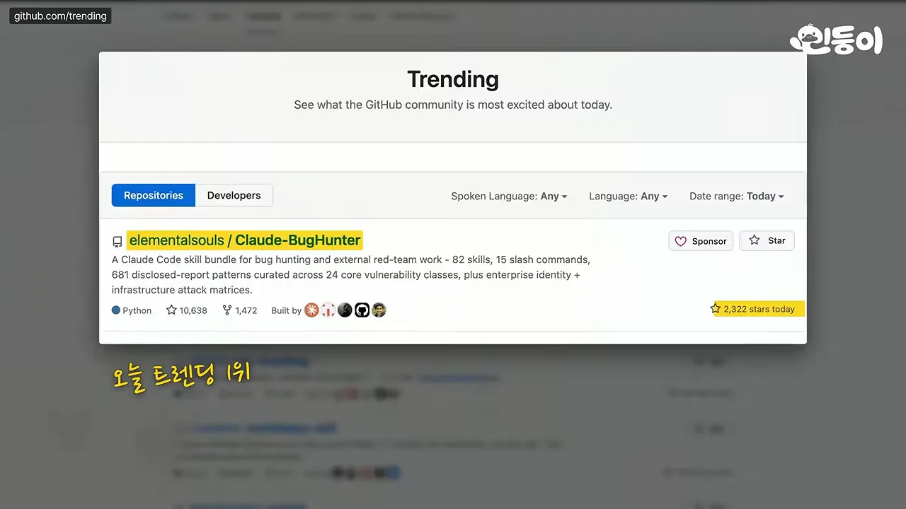
영상은 오름세도 짚어요. 5월 5일에 만든 저장소인데, 이번 주 초(11월 15일)에는 하루 570개쯤이던 별이 사흘 만에 하루 1,790개로 늘었어요. 첫 화면의 2,322개와는 재는 날이 달라서 숫자가 달라요.
버그 바운티를 클로드 코드에게
버그 바운티는 서비스의 보안 허점을 찾아 신고하면 회사가 상금을 주는 제도예요. 이 스킬 묶음은 클로드 코드가 그 일을 '챗봇이 아니라 노련한 보안 연구자처럼' 하게 만들어요. 핵심 재료는 실제로 상금을 받은 공개 보고서예요. 아래 화면 위쪽 숫자 카드에 83, 15, 58, 681, 5, MIT(Massachusetts Institute of Technology)가 나란히 있고, 영상은 그중 681을 짚어요. 공격 패턴 681개를 24가지 유형으로 정리해 넣었다는 뜻이에요.
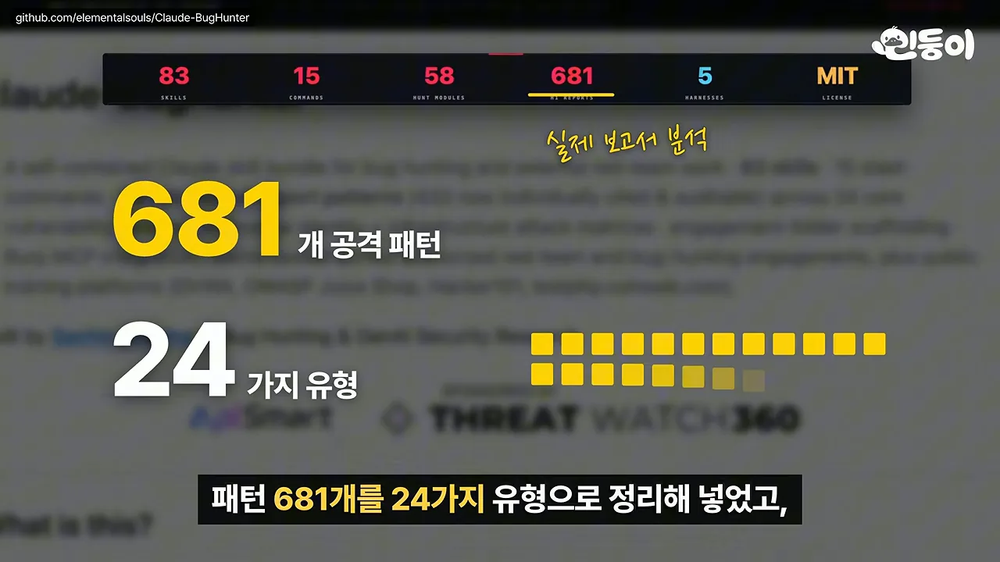
쓰는 법은 두 가지예요. README의 'How it works'에서 첫 줄 Plain English가 노랗게 칠해져 있어요. 무엇을 점검하려는지 말로 설명하면 맞는 스킬이 알아서 켜진다는 뜻이에요. 스킬 이름을 외울 필요가 없어요. 둘째 줄은 /hunt 명령과 cbh CLI(Command-Line Interface)로 직접 다루는 방법이에요.
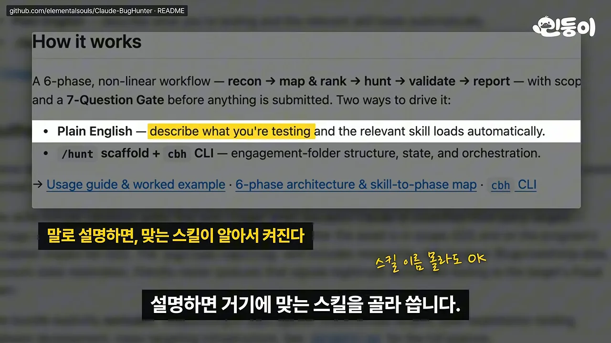
영상은 일하는 순서를 정찰, 공격, 검증, 보고서 넷으로 줄여 말해요. 그리고 보고서를 내기 전에 일곱 가지 질문으로 '정말 신고할 만한 결과인가'를 한 번 더 따져요. 아래 그림은 이 순서를 한 줄로 옮긴 거예요.
해커원 연결, 그리고 쓰면 안 되는 곳
11월 18일에는 버그 바운티 플랫폼 해커원(HackerOne)과 바로 연결되는 기능이 들어왔어요. 아래 저장소 파일 목록에서 커밋 메시지 'add a HackerOne MCP server'가 노랗게 칠해져 있고, 맨 아래 mcp/hackerone 폴더가 새로 보여요.
영상은 경고로 마무리해요. 내 서버나 서면으로 허가를 받은 곳에만 써야 해요. README 위쪽 문장에 'own'과 'written authorization to assess'가 칠해져 있어요. 아래 상자는 앤트로픽 모델이 공격용 보안 작업을 기본으로 막는다는 안내예요. 허가받은 작업이라면 사이버 검증 프로그램(CVP(Cyber Verification Program))에 신청하라고 적혀 있고, 영상도 손글씨로 'CVP 신청 권장'을 덧붙여요.
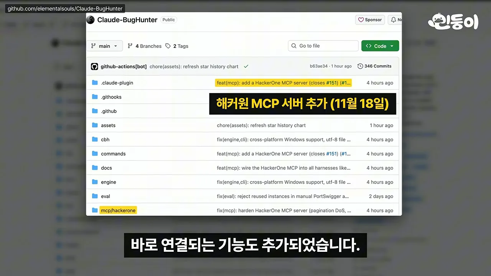
3·4·5위 — 프로그램 조종, 여론 수집, 도커 관리
3위 CLI-Anything — 모든 프로그램을 명령어로
별 약 59,000개를 받은 저장소예요. 화면 왼쪽 위에 'Q. 3위 HKUDS/CLI-Anything · ★ 59,407'이 보여요. 저장소 주인은 홍콩대(HKU(The University of Hong Kong)) 데이터 인텔리전스 연구실이에요. GIMP(GNU Image Manipulation Program)나 Blender처럼 원래 마우스로 눌러 가며 쓰는 프로그램을, AI가 터미널에서 명령어로 조종하게 바꿔 줘요.
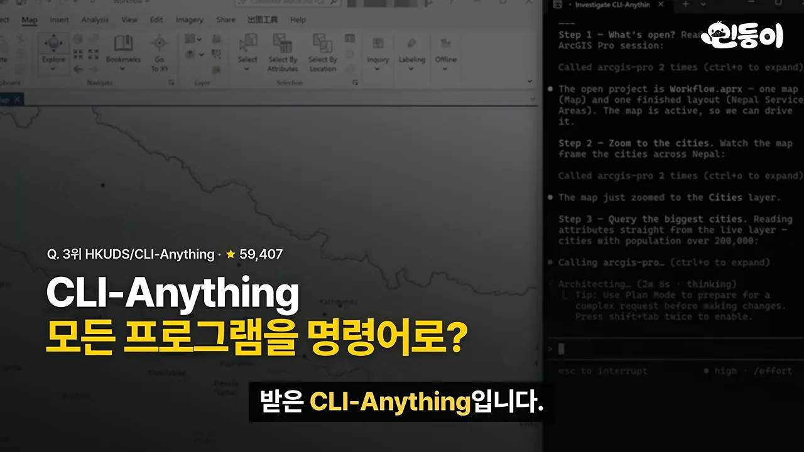
쓰는 법은 간단해요. 클로드 코드에 프로그램이 설치된 폴더를 알려 주면, 그 프로그램을 다룰 명령어와 사용 설명서, 테스트까지 만들어 줘요. 저장소에는 Blender, Audacity, QGIS(Quantum GIS)처럼 프로그램마다 agent-harness 폴더가 하나씩 쌓여 있어요.
차이는 '짐작'과 '실행'이에요. 화면을 캡처해 버튼 위치를 짐작하는 AI는 느리고 자주 틀려요. CLI-Anything은 프로그램 기능을 명령어로 바로 실행해요. 그래서 아래처럼 Blender에서는 3D 장면이 진짜로 렌더링되고, LibreOffice에서는 PDF(Portable Document Format) 파일이 그대로 나와요.
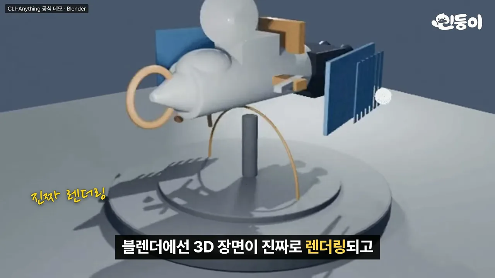
공식 데모는 더 커요. Blender로 드론을, FreeCAD로 탐사 로버를 명령어만으로 만들어 내요. 아래 화면 가운데가 FreeCAD로 만든 바퀴 여섯 개짜리 로버 설계도예요.
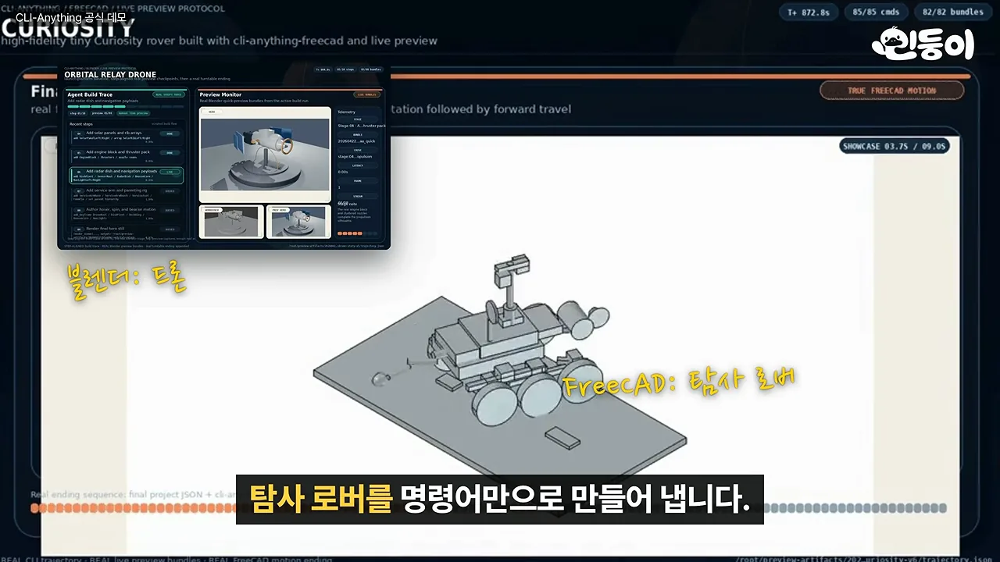
직접 만들 필요도 없어요. CLI-Hub에는 이렇게 만든 명령어 도구가 이미 100개쯤 올라와 있어요. 화면의 숫자 카드에는 103이 칠해져 있고, 옆의 35는 분류 수예요. 골라 설치만 하면 돼요.
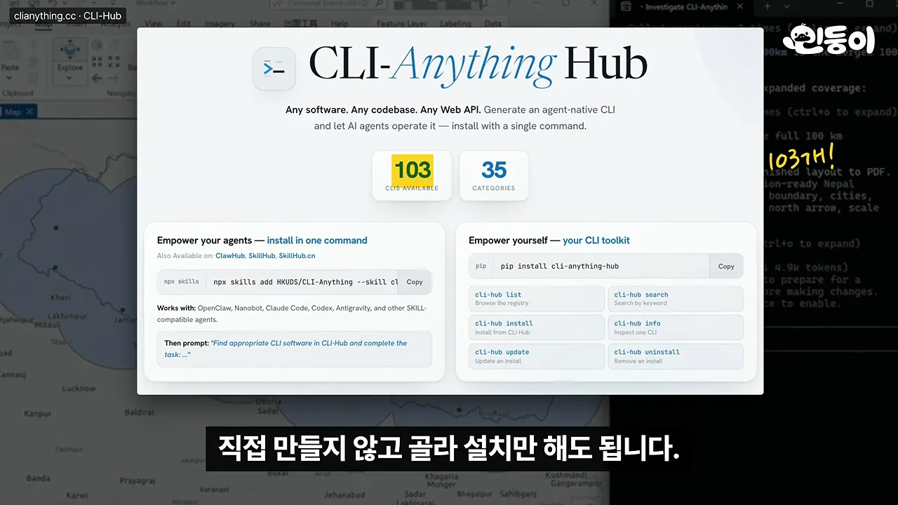
4위 last30days — 30일 치 여론을 한 장에
별 약 7만 개를 받은 스킬이에요. 주제 하나를 주면 여러 커뮤니티에서 최근 30일 동안 나온 이야기를 한꺼번에 모아 와요. 아래 화면 제목이 'A dozen walled gardens. One agent. Searched in parallel.'이에요. 담장으로 막힌 열두 곳을 에이전트 하나가 동시에 뒤진다는 뜻이에요. Reddit은 추천 수와 인기 댓글, X는 게시물과 좋아요, Polymarket은 실제 돈이 걸린 확률처럼 곳마다 무엇을 가져오는지 적혀 있어요.
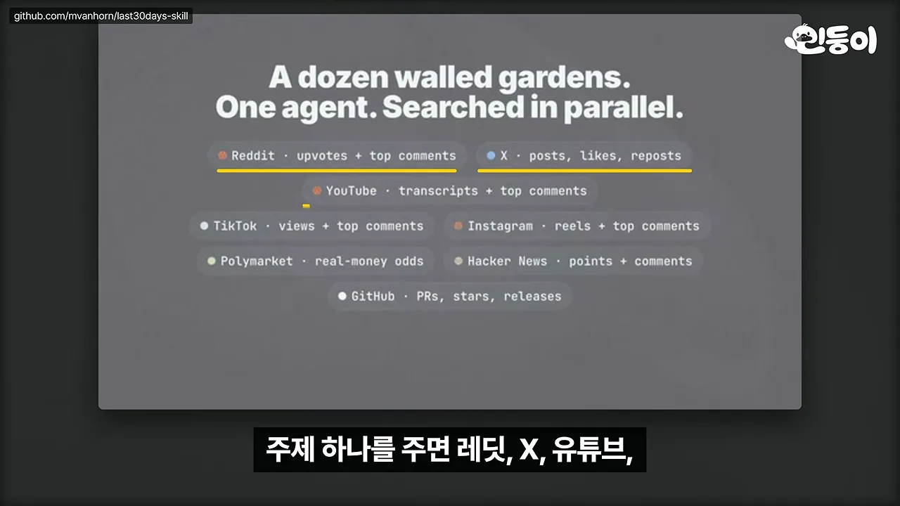
주 재료는 구글 검색에 잘 안 나오는 커뮤니티 댓글이에요. 화면 문구가 이걸 한 줄로 말해요. '구글은 편집자를 찾고, last30days는 사람들을 찾는다.'
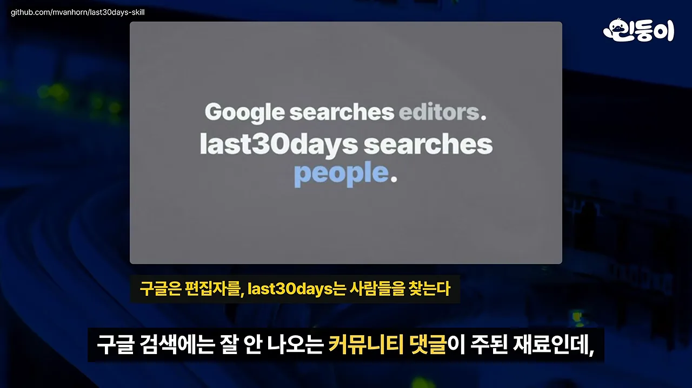
모은 걸 그대로 늘어놓지는 않아요. 좋아요 수와 예측 시장에 걸린 돈을 기준으로 점수를 매겨, 출처가 달린 요약 한 장으로 정리해요. 아래 화면 왼쪽이 그 결과 예시예요. 'What I learned' 아래 문단마다 굵은 제목과 근거 숫자가 붙어 있어요.
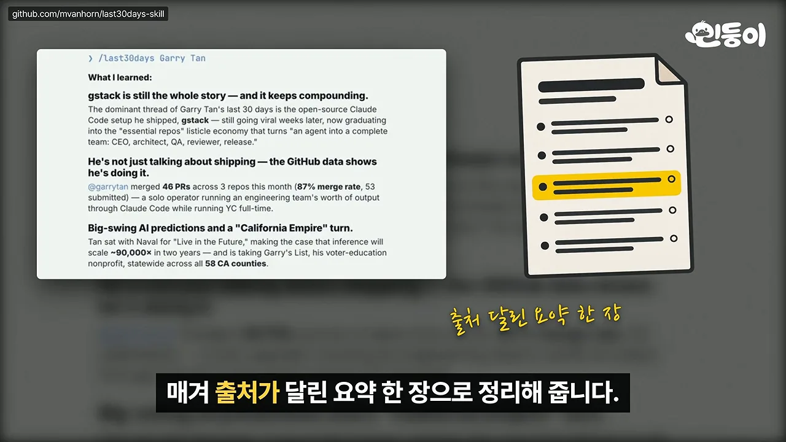
5위 arcane — 도커를 클릭으로
별 약 9,600개를 받은 무료 도구예요. 도커를 터미널 명령 대신 웹 화면에서 관리해요. 컨테이너를 켜고 끄는 것부터 로그 확인, 설정 파일 수정까지 클릭으로 하니까 명령어를 외울 일이 없어요.
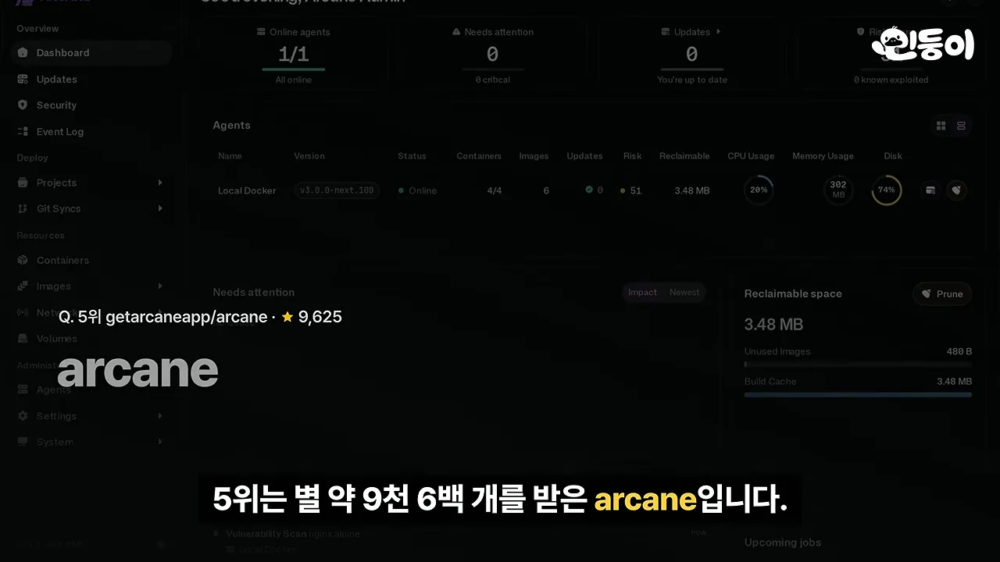
대시보드 위쪽 줄을 보면 컨테이너 4/4, 이미지 6 옆에 CPU(Central Processing Unit) 사용량(20%), 메모리 사용량(302MB), 디스크(74%)가 노란 칸으로 묶여 있어요. 이 값들이 실시간 그래프로 움직여요.
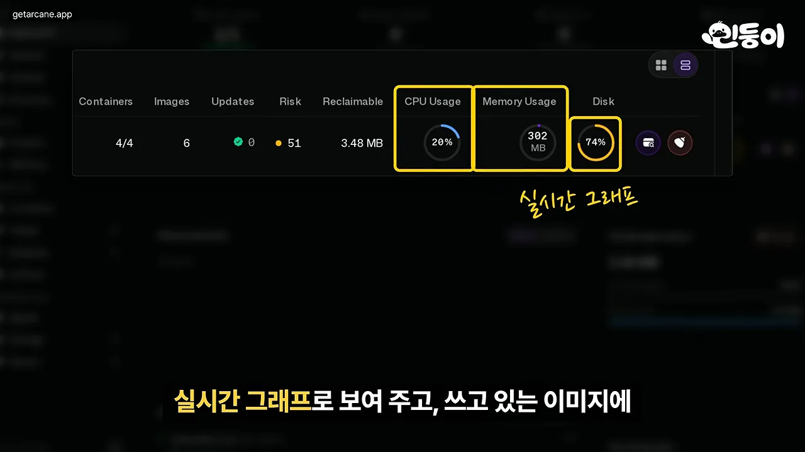
쓰고 있는 이미지에 알려진 보안 취약점이 있는지도 바로 검사해요. 아래 화면 왼쪽 'Recent activity'에 Vulnerability Scan 기록이 있고, 오른쪽 Risk score 칸에 51이 떠 있어요.
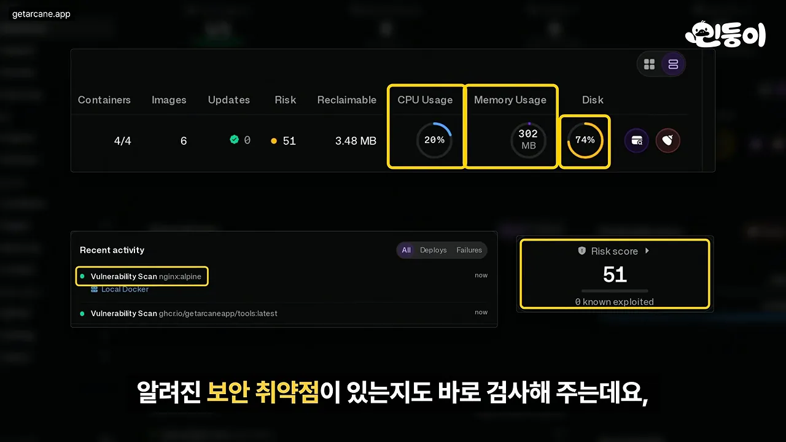
이 대시보드는 11월 14일에 나온 3.0에서 새로 만든 거예요. 릴리스 노트 첫 줄이 'redesigned dashboard and activity center'예요. 서버가 여러 대라면 각 서버의 도커를 이 화면 하나에 모아 관리할 수도 있어요.
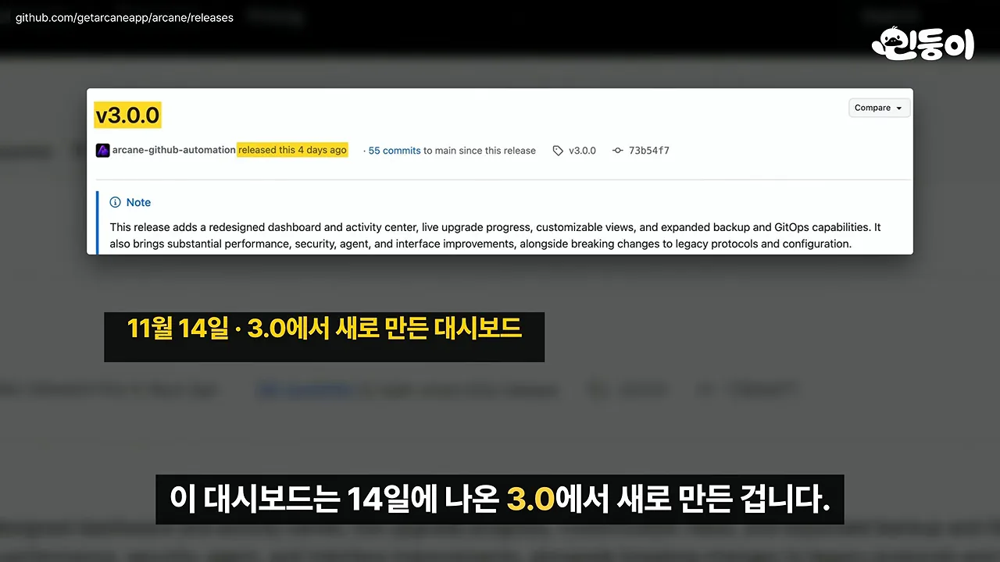
6·7·8위 — 스킬 채점기, nvm, uv
6위 SkillEvaluator — 그 스킬, 정말 쓸모 있나?
별 약 3,500개를 받은 엔비디아의 스킬 채점기예요. 스킬을 깔아도 정말 도움이 되는지는 확인하기 어려워요. 이 도구는 스킬이 있을 때와 없을 때 에이전트에게 똑같은 일을 시켜 보고, 나아진 정도를 '스킬 리프트'라는 점수로 보여 줘요. 아래 표가 그 형식이에요. Correctness(정확도) 줄에서 스킬 없이 46, 스킬을 쓰면 87, Skill Lift 칸이 +41이에요.
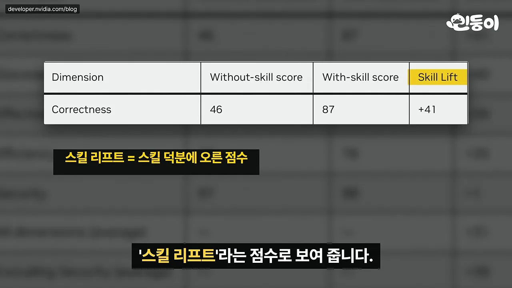
엔비디아는 이걸로 자사 스킬 300여 개를 평가했어요. 영상이 이 결과를 막대로 다시 그렸어요. 정확도 점수 평균이 스킬 없이 46, 스킬을 쓰면 87이에요.
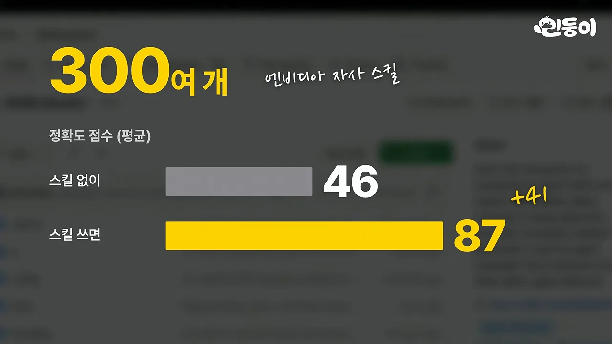
하지만 늘 좋아지기만 한 건 아니었어요. 블로그 문단에 두 예가 칠해져 있어요. jetson-optimize-memory는 토큰을 617,306에서 142,540으로 76.9% 줄였어요. 반대로 cuopt-install은 25,227에서 55,582로 120.3% 늘려, 두 배 넘게 쓰게 만들었어요.
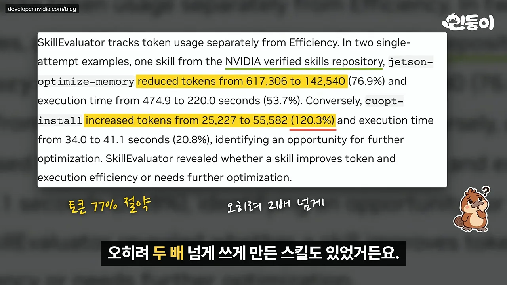
SkillEvaluator는 성능 비교와 함께 스킬에 보안 문제가 없는지, 다른 스킬과 역할이 겹치지 않는지도 검사해요.
7위 nvm — 노드 버전을 한 줄로
별 약 96,000개를 받은 도구예요. 한 컴퓨터에 Node.js 여러 버전을 깔아 두고 명령 한 줄로 바꿔 써요. README 화면에서 nvm install node(새 버전)와 nvm install 14.7.0(예전 버전)이 칠해져 있고, 아래 칸에 nvm use node가 있어요. 깔 때도, 돌아갈 때도 한 줄이면 바뀌어요.
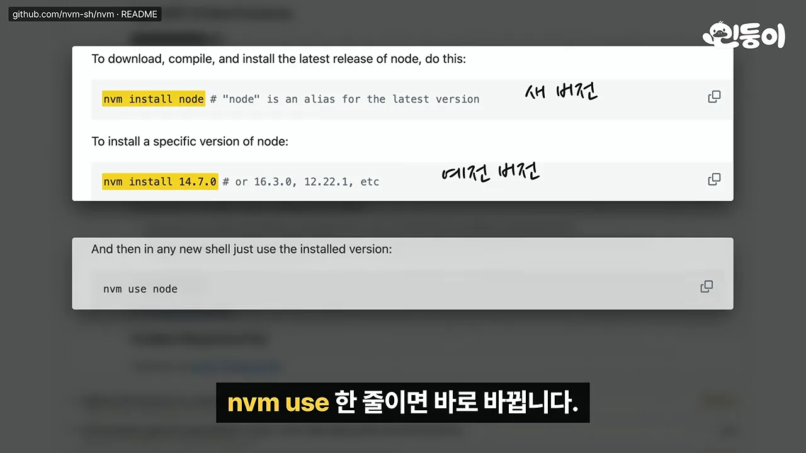
프로젝트 폴더에 쓸 버전을 적은 파일을 넣어 두면, 그 폴더에 들어갈 때 맞는 버전으로 알아서 바뀌게 할 수도 있어요. 맥과 리눅스 터미널에서 돌아가고, 윈도우에서는 nvm-windows라는 별도 도구를 쓰라고 안내해요.
영상이 짚은 건 보안 공지예요. 11월 4일에 새 버전 0.41.0과 함께 보안 공지 7건이 한꺼번에 올라왔어요. 아래 목록이 그 7건이에요. 쓰고 있다면 업데이트부터 하는 게 좋아요.
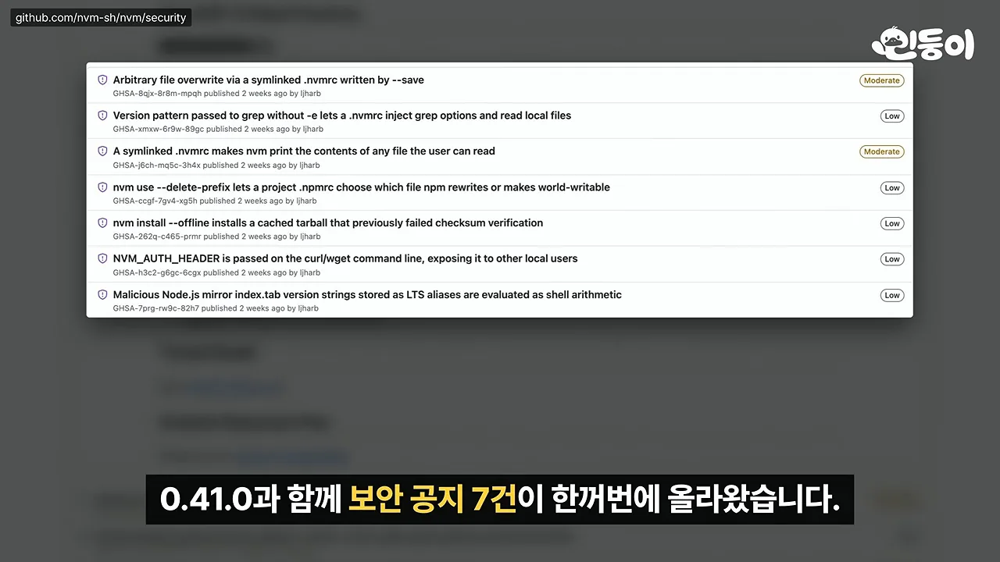
8위 uv — pip보다 100배 빠르다?
별 약 92,000개를 받은 파이썬 도구예요. 파이썬으로 뭘 하려면 라이브러리를 깔고, 프로젝트마다 환경을 따로 만들고, 파이썬 버전도 맞춰야 해요. 그동안은 pip, poetry, pyenv처럼 여러 도구로 나눠 했어요. uv는 이 일을 하나로 합쳤어요.
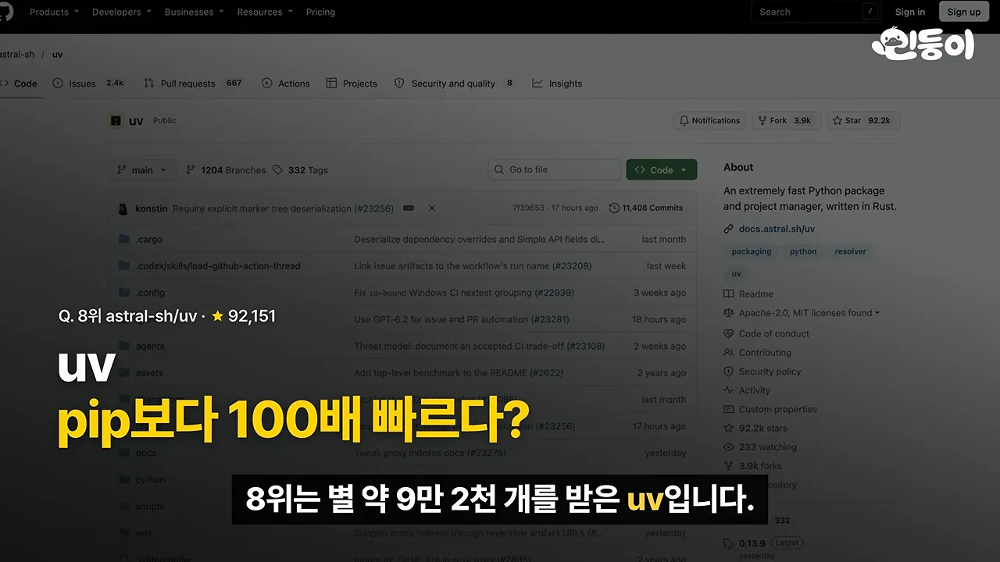
가장 큰 특징은 속도예요. 러스트로 만들어서 pip보다 10~100배 빠르다고 해요. uv 깃허브의 그래프를 보면, 캐시가 남아 있는 상태에서 Trio의 의존성을 설치하는 데 uv는 0.06초, poetry는 0.99초, pdm은 1.90초, pip-sync는 4.63초가 걸렸어요.
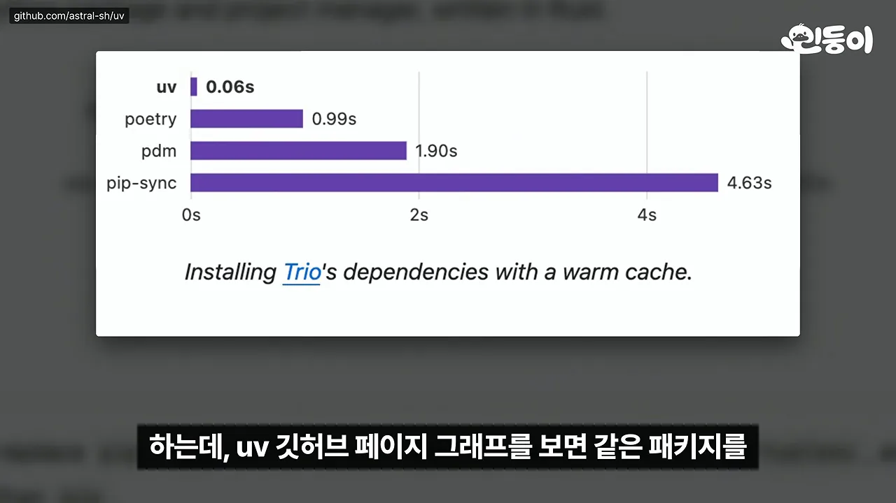
만든 회사 Astral은 지난 3월 OpenAI 합류를 발표했어요. 아래 블로그 글이 2026년 3월 19일 'Astral to join OpenAI'예요.
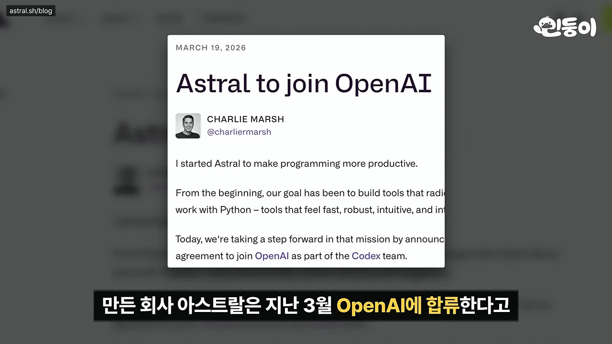
그래도 uv 업데이트는 이어졌어요. 이번 달에만 새 버전이 세 번 나왔어요. 아래 릴리스 화면의 최신 버전 0.13.9가 2026-11-17에 나왔고, 왼쪽 목록에 0.13.8, 0.13.7이 이어져요. 세 버전이 각각 11월 17일, 12일, 3일에 나왔어요.
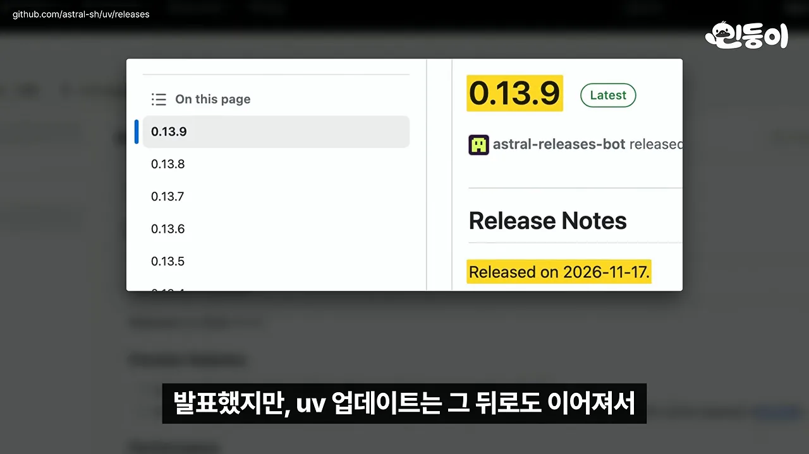
9·10·11·13위 — 논문 에이전트, Stitch 스킬, Svelte, Appwrite
9위 paper-orchestra — AI 다섯이 논문을 쓴다?
별 약 3,900개를 받은, 구글 리서치가 공개한 논문 작성 에이전트예요. 아이디어 메모와 실험 기록을 넣으면 AI 에이전트 다섯이 일을 나눠 맡아요. 목차, 그래프, 관련 논문과 인용 확인, 본문 작성을 하나씩 맡아요. 아래 README 그림에서 Step 2 Plotting Agent가 그래프를, Step 3 Literature Review Agent가 관련 논문을, Step 4 Section Writing Agent가 본문을 맡아요.
마지막 Step 5가 심사위원 역할이에요. 가운데 AgentReview(evaluator)가 원고를 보고 Improvement, Neutral, Degradation 중 어디인지 판정해요. 나빠졌으면 빨간 화살표처럼 되돌려 고쳐요.
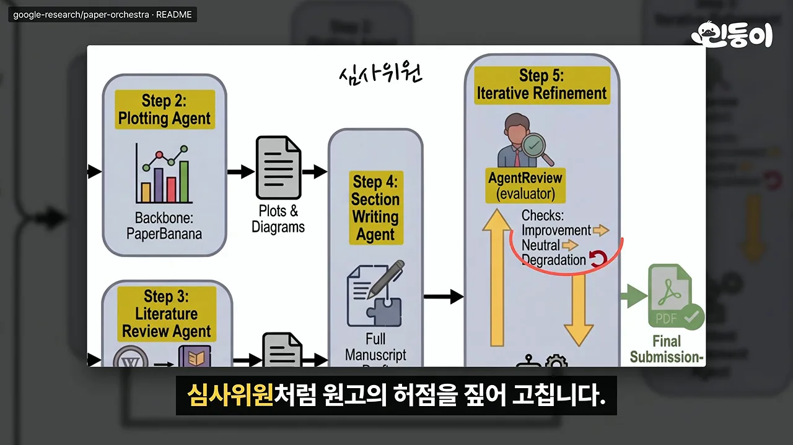
이렇게 40분쯤 지나면 학회 논문 형식의 원고 초안이 나와요. 화면 왼쪽에 이 숫자의 출처가 '11/17 X 게시물'로 적혀 있고, 그날 저장소가 별을 하루 1,175개 받았다고 해요.
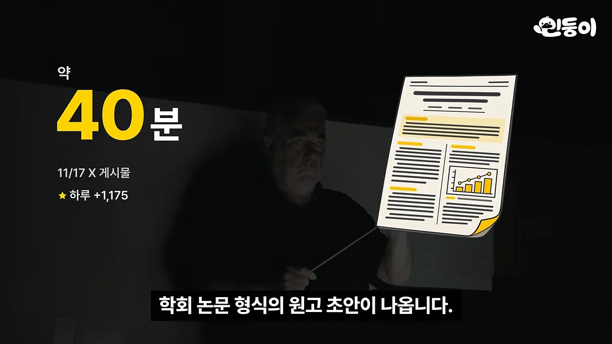
다만 구글 공식판은 API 키가 있어야 돌아가요. README의 .env 예시에 OPENAI_API_KEY와 GEMINI_API_KEY 줄이 있어요. Gemini 모델을 쓰려면 Vertex AI 설정이나 Gemini 키를, OpenAI 모델을 쓰려면 OpenAI 키를 넣으라고 적혀 있어요.
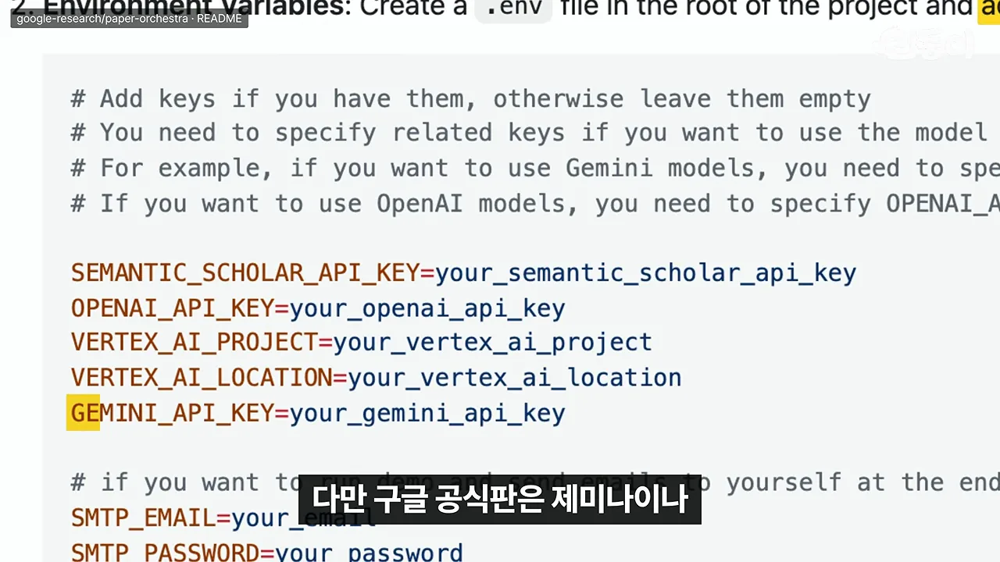
한 개발자(Ar9av)가 이걸 클로드 코드나 커서에서 쓰는 스킬로 옮겨 뒀어요. 아래 README에 'host-agent-executable skills'가 칠해져 있고, 'There are no API keys'가 굵게 적혀 있어요. 따로 API를 부르지 않고, 쓰고 있는 코딩 에이전트가 추론과 웹 검색을 직접 해요.
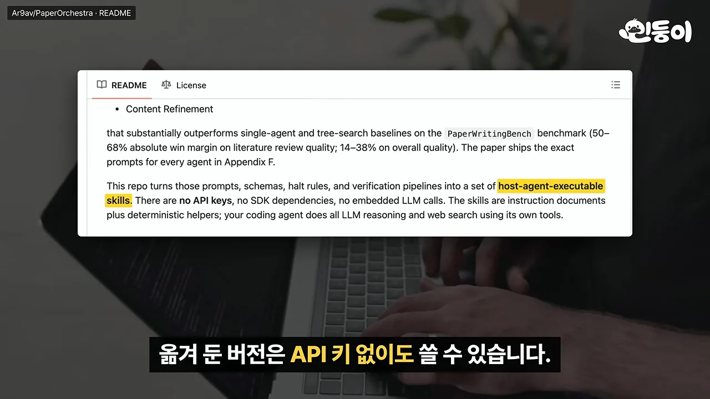
10위 stitch-skills — 뻔한 AI 디자인은 그만?
별 약 10,300개를 받은 스킬 모음이에요. 구글 Stitch는 말 한 줄이나 손 스케치만 주면 디자이너가 만든 것 같은 화면을 그려 주는 AI 디자인 도구예요. 아래 'Welcome to Stitch' 화면의 입력칸에 문장 한 줄을 넣는 식이에요.
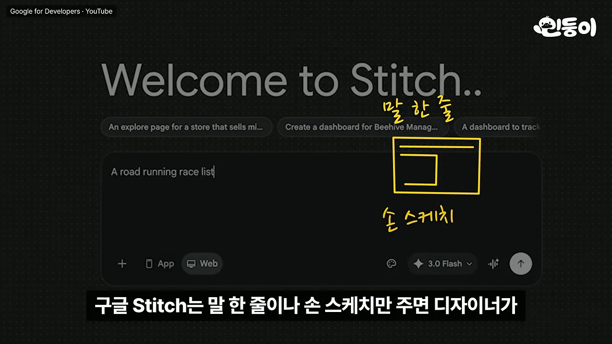
stitch-skills는 이 기능을 클로드 코드 같은 코딩 에이전트가 직접 쓰게 해 줘요. 아래 화면 왼쪽이 Stitch 웹사이트, 오른쪽이 터미널의 claude예요. 터미널에 'Stitch로 첫 화면 디자인해 줘'라고 치면 돼요.
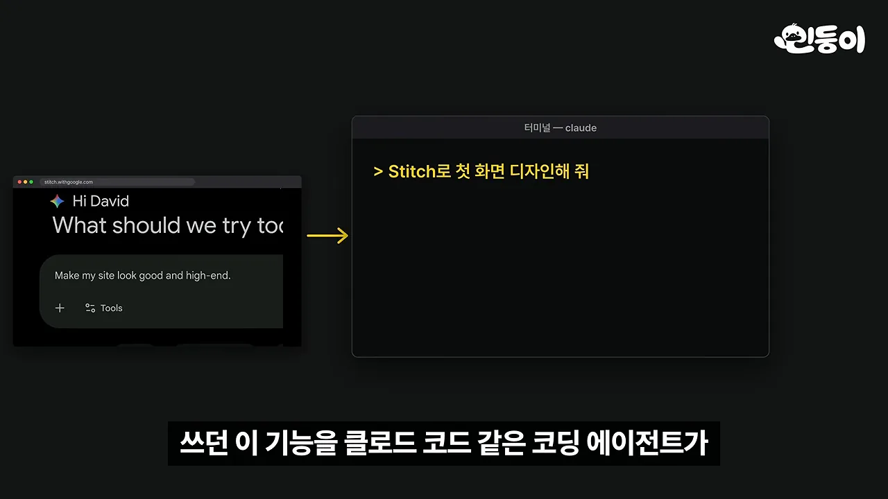
에이전트가 혼자 화면을 짜면 흔히 'AI 슬롭'이라 부르는 뻔한 디자인이 나오기 쉬워요. 이걸 깔면 Stitch가 그린 디자인을 받아 리액트 코드로 바로 옮겨요. 아래 화면이 그 결과 예시인 Heritage.tsx의 Hero 컴포넌트예요.
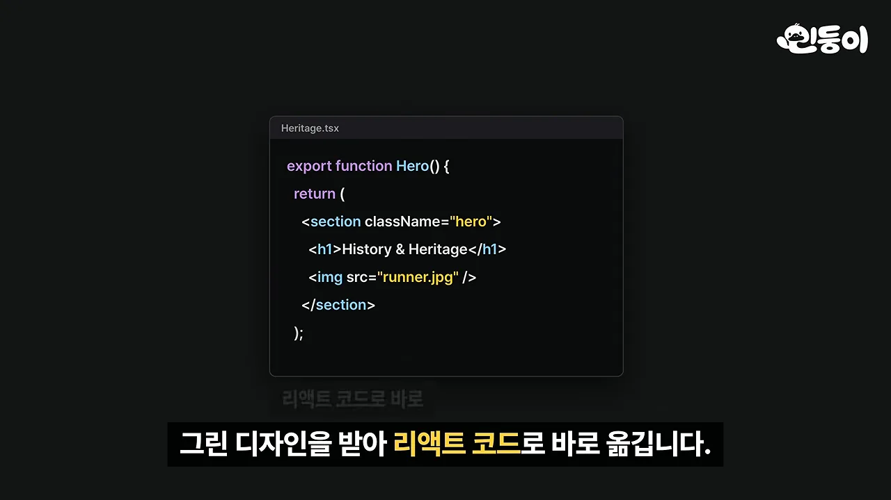
여러 페이지도 이어서 만들어요. 다섯 페이지짜리 사이트를 부탁하면, 한 페이지를 끝낼 때마다 다음 페이지로 넘어가 다섯 페이지를 다 만들 때까지 이어 가요.
11위 Svelte — 리액트랑 뭐가 다른데?
별 약 9만 개를 받은 웹 화면 프레임워크예요. 화면 하나를 HTML(HyperText Markup Language), CSS(Cascading Style Sheets), 자바스크립트로 한 파일에 그대로 적어서 코드가 짧고 읽기 쉬워요. 아래 App.svelte 파일이 위에서부터 <script>(자바스크립트), <button>(HTML), <style>(CSS) 세 칸이에요. 버튼을 누를 때마다 숫자가 하나씩 올라가는 화면 전체가 이게 다예요.
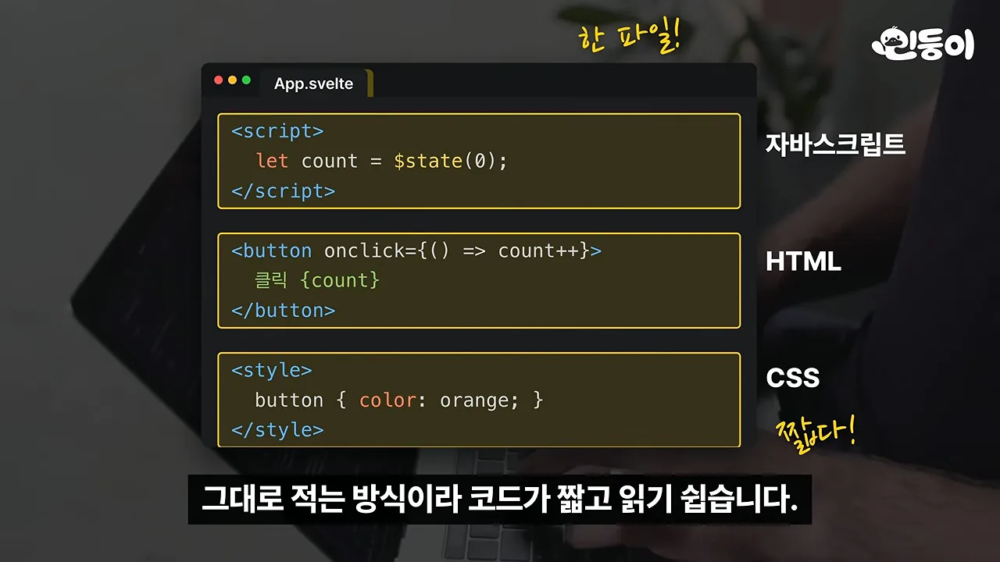
가장 큰 특징은 컴파일러라는 점이에요. 리액트는 브라우저에서 바뀐 곳을 그때그때 비교해 찾아요. Svelte는 미리 가벼운 자바스크립트로 바꿔 두었다가, 화면에서 바뀐 부분만 정확히 고쳐 그려요. 아래 그림의 기계가 그 '미리 바꿔 두는' 컴파일러를 나타내요.
버튼 같은 작은 부품부터 만들 수 있고, 짝꿍 프레임워크 SvelteKit을 쓰면 서버까지 갖춘 웹 서비스 전체도 만들 수 있어요. 아래 공식 설명에는 리액트에서 왔다면 Next, 뷰에서 왔다면 Nuxt와 비슷하다고 적혀 있어요. svelte.dev에서는 설치 없이 바로 써 볼 수 있어요.
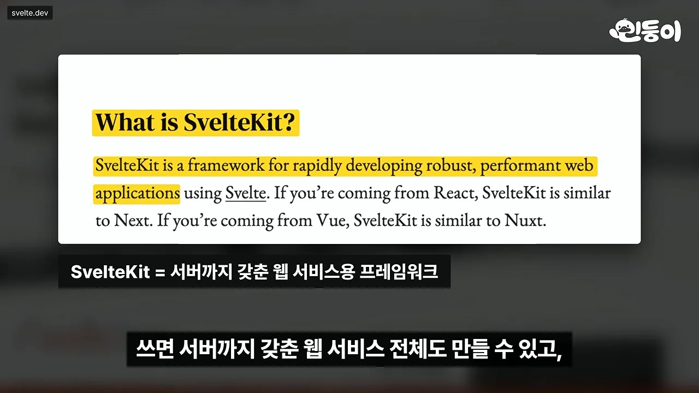
13위 Appwrite — 백엔드를 통째로?
별 약 58,000개를 받은 오픈소스 백엔드예요. 앱 화면 뒤에서 돌아가야 하는 기능을 한꺼번에 줘요. 아래 그림이 그 다섯 가지예요. 로그인, 데이터베이스, 파일 저장, 서버 함수, 호스팅이에요.
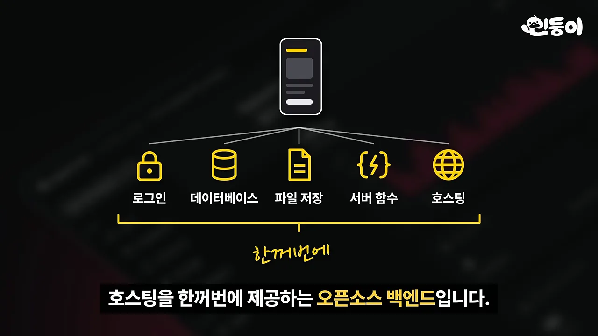
내 서버에 직접 설치해도 되고(셀프 호스팅), 클라우드 서비스로 써도 돼요. 요즘은 스스로를 'MCP와 에이전트를 먼저 생각한 플랫폼'이라고 소개해요.
이번 주에는 파일 저장에서 꽤 큰 구멍을 막았어요. 그동안은 암호화 옵션을 켜 둬도 20MB가 넘는 파일은 암호화되지 않은 채 저장됐어요. 아래 공식 블로그 글(11월 17일)의 첫 문단 끝에 'The 20 MB limit is gone.'이 있어요.
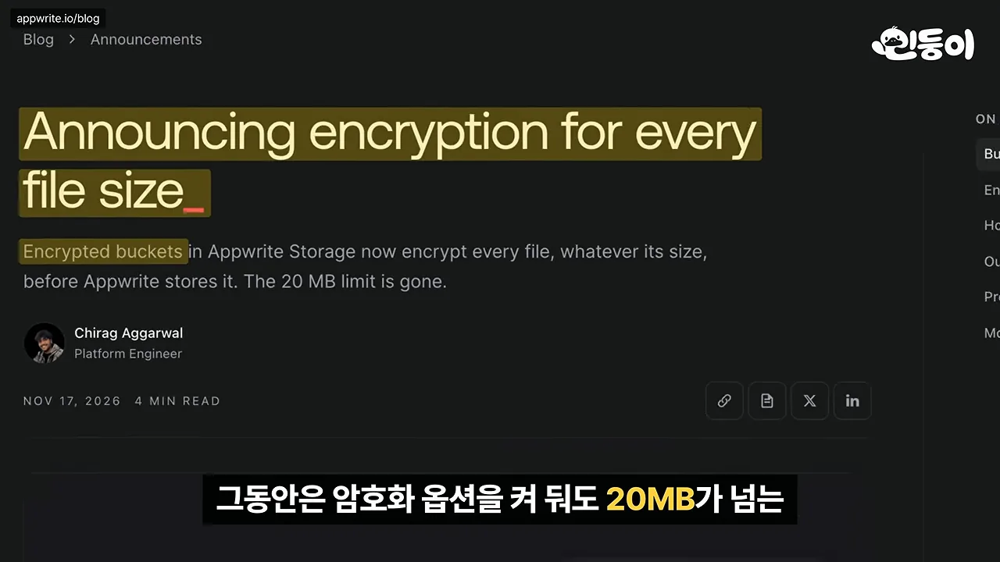
14·15·16·19·20위 — OpenVINO, superpowers, ECC, Solid, MCP 목록
14위 OpenVINO — 내 PC에서 AI를 빠르게?
별 약 11,000개를 받은 저장소예요. 인텔이 2018년부터 만들어 온 도구로, 다 만든 AI 모델을 내 컴퓨터에서 빠르게 돌아가도록 다듬어 줘요. 학습이 아니라 추론, 그러니까 이미 만든 모델을 실행하는 쪽을 빠르게 하는 도구예요.
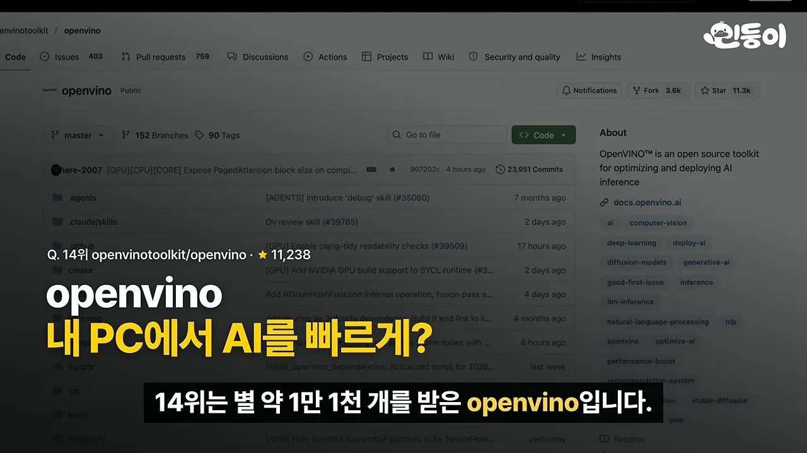
돌리는 곳은 CPU, 내장 그래픽, NPU(Neural Processing Unit)예요. 아래 인텔 슬라이드가 Core Ultra 칩 안의 세 엔진을 나란히 보여 줘요. NPU는 전력 효율, CPU는 빠른 응답, GPU는 높은 처리량 담당이에요.
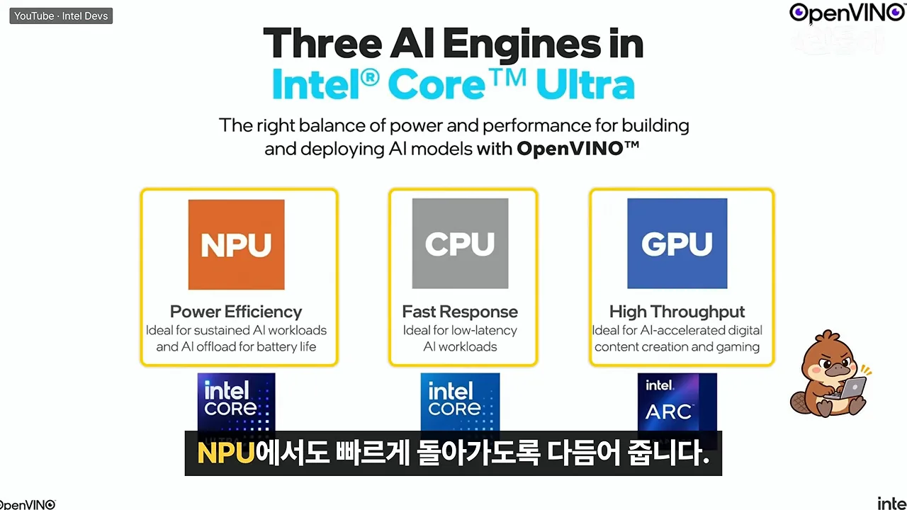
모델을 새로 만들 필요는 없어요. 아래 그림 위쪽 줄의 PyTorch, TensorFlow, ONNX(Open Neural Network Exchange) 같은 형식으로 만든 모델을 OpenVINO가 그대로 불러와요. 그다음 아래쪽의 CPU, GPU, NPU, FPGA(Field-Programmable Gate Array)에 맞게 다듬어요. 설치는 pip install openvino 한 줄이에요.
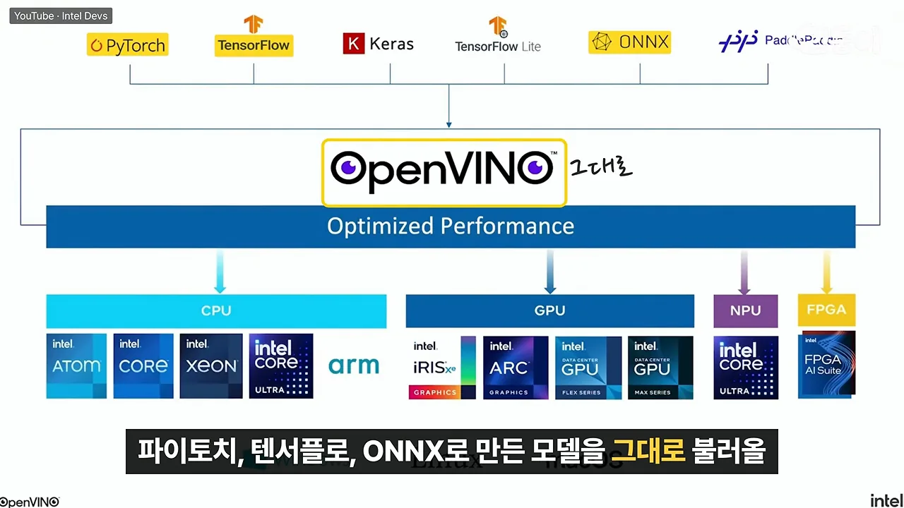
15위 superpowers — 질문이 너무 많다고?
별 약 32만 개로 너무 유명한 스킬 모음이에요. 코딩 AI가 코드부터 짜지 않고 계획과 테스트를 먼저 하게 만들어요.
최근 업데이트에서는 AI가 처음에 던지는 질문이 너무 많다는 불만을 받아들였어요. 아래 v7.0.2 릴리스 노트 첫 줄에 'It asks fewer of them'이 칠해져 있어요. 그 아래 줄을 보면, 사람이 모르게 채점한 테스트 대화에서 불필요한(filler) 질문이 7.0.1의 41개에서 23개로 줄었어요.
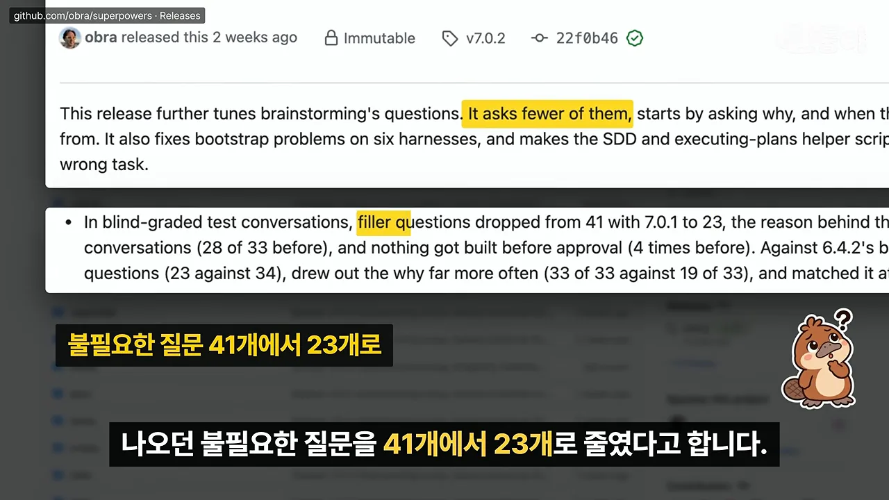
16위 ECC — 에이전트 72개를 한 번에?
별 약 31만 개를 받은 저장소예요. 아래 사이트 첫 화면 제목이 'The operating system for AI agent harnesses.'예요. 앤트로픽 해커톤 우승자가 자기 클로드 코드 설정을 모아 만들었어요. README에는 2025년 9월 Anthropic x Forum Ventures 해커톤에서 우승했다고 적혀 있어요.
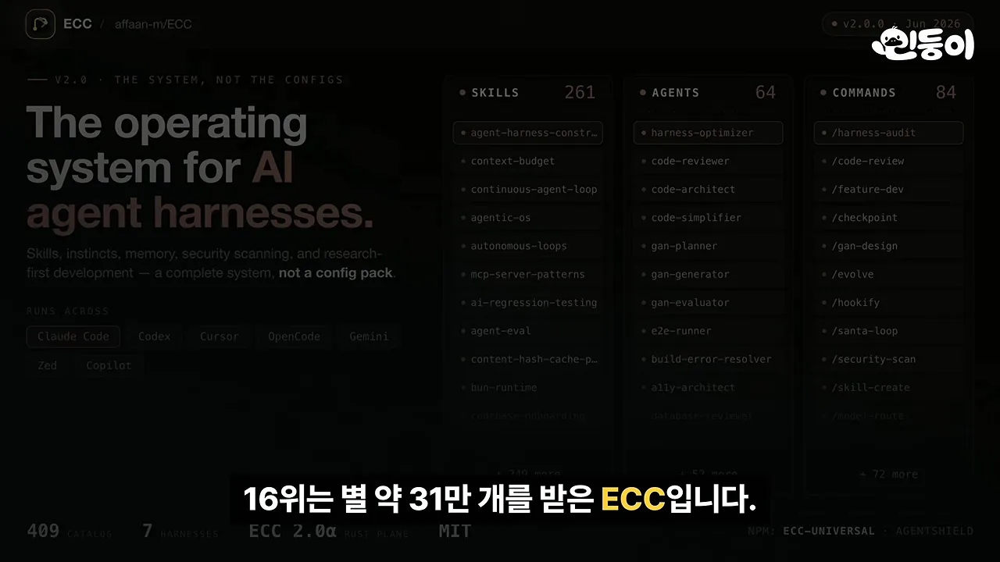
superpowers처럼 AI가 코드를 짜는 과정을 체계적으로 만들지만 규모가 훨씬 커요. 아래 README 문장 'Access to 72 agents, 327 skills'처럼 에이전트 72개와 스킬 327개가 들어 있어요. 위 사이트 화면의 스킬 261개, 에이전트 64개는 6월에 나온 v2.0.0 기준 숫자예요.
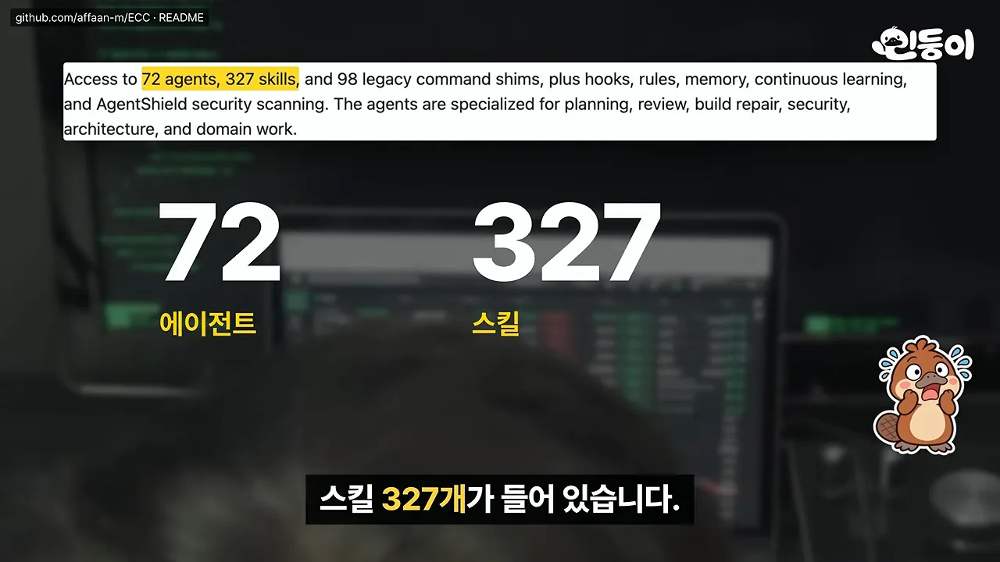
계획하고 테스트하는 데까지는 superpowers와 비슷해요. 차이는 그 뒤예요. ECC는 끝난 작업을 한 번 더 검토하게 하고, 중요한 내용은 기억해 두고, 자주 반복하는 작업은 다음에 바로 꺼내 쓸 스킬로 만들어 둬요.
클로드 코드는 물론 Codex와 커서에서도 써요. 설치 방법이 여러 가지라 주의가 필요해요. 아래 README 'Pick one path only (per harness)' 아래에 되는 조합(Works)과 피할 조합(Avoid)이 나뉘어 있어요. 맨 아래 'Do not stack install methods.'가 핵심이에요. 겹쳐 설치하면 스킬이 두 번 깔리니 하나만 골라야 해요.
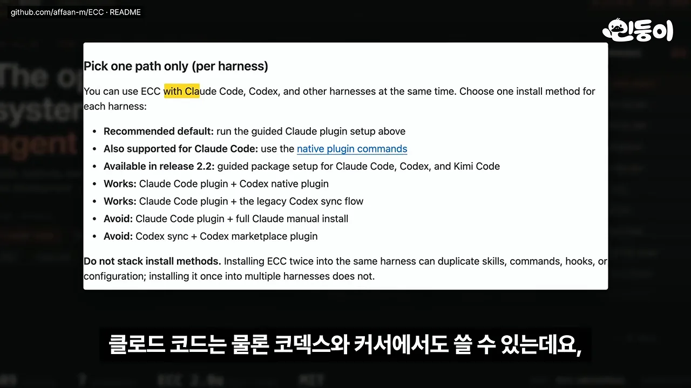
19위 Solid — 딱 한 번만 실행된다?
별 약 36,000개를 받은, 리액트처럼 화면을 만드는 라이브러리예요. 데이터가 바뀌면 그 데이터를 쓰는 부분만 다시 실행하는 게 특징이에요. 아래 README 문장 끝 'only the code that depends on it re-runs'가 그 말이에요.
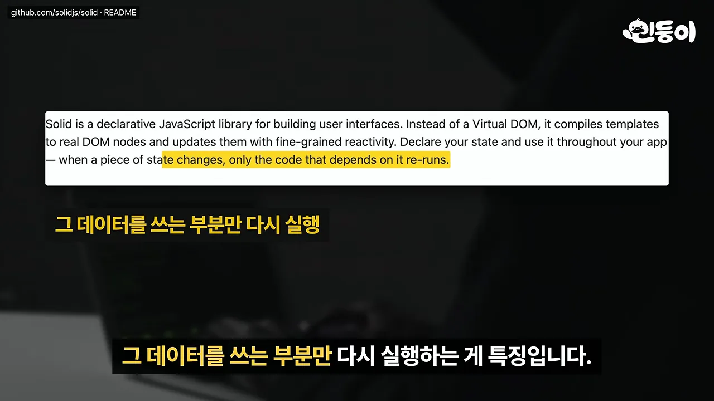
그래서 컴포넌트 함수는 처음에 딱 한 번만 돌아요. 아래 Counter 예시 주석에 'The component body runs once.'가 칠해져 있어요. 그 뒤엔 숫자 하나가 바뀌면 화면에서 그 숫자 자리만 새로 그려요.
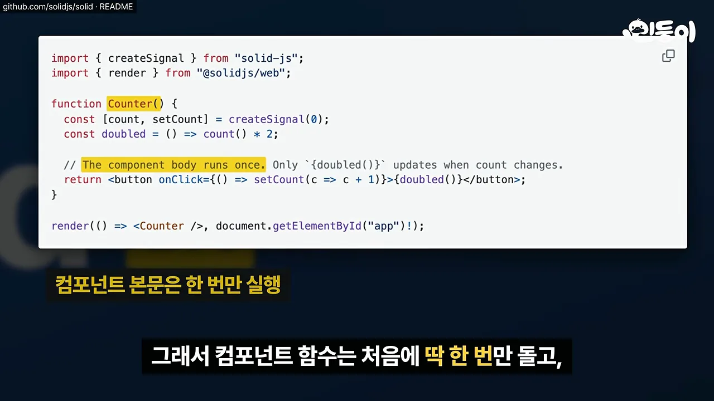
11월 17일에 2.0 정식판이 나왔어요. 아래 Hacker News 글 제목이 'Solid 2.0 - The Long Hold'이고, 다섯 해 만의 정식판이라고 적혀 있어요. 서버에 보낸 요청을 그대로 넘겨도 결과가 오면 화면이 알아서 따라 바뀐다고 해요.
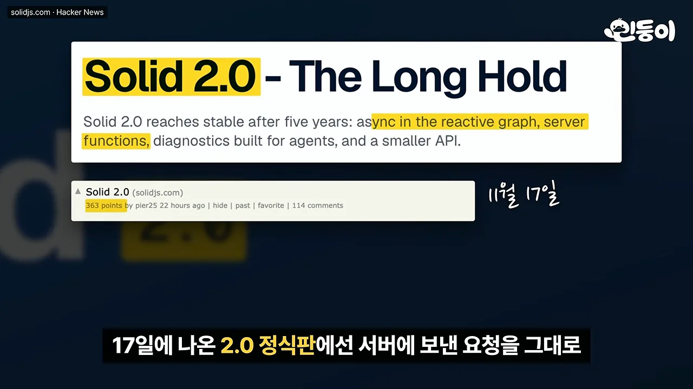
다만 1.x에서 쓰던 기능 일부가 빠졌어요. 아래 화면에 줄이 그어진 이름들(createResource, batch, startTransition, on, produce, createComputed, createMutable)이 그거예요. 쓰던 프로젝트를 옮기려면 이전(마이그레이션) 가이드를 봐야 해요.
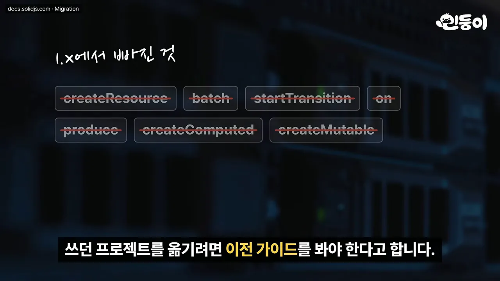
20위 awesome-mcp-servers — MCP 서버, 어디서 찾지?
별 약 98,000개를 받은 목록이에요. MCP는 AI가 다른 서비스와 연결할 때 쓰는 USB(Universal Serial Bus) 단자 같은 거예요. 이 저장소는 그런 MCP 서버를 분야별로 모아 뒀어요. 아래 README 첫 화면 'A curated list of awesome Model Context Protocol (MCP) servers.' 위로 여러 언어판 배지가 줄지어 있어요.
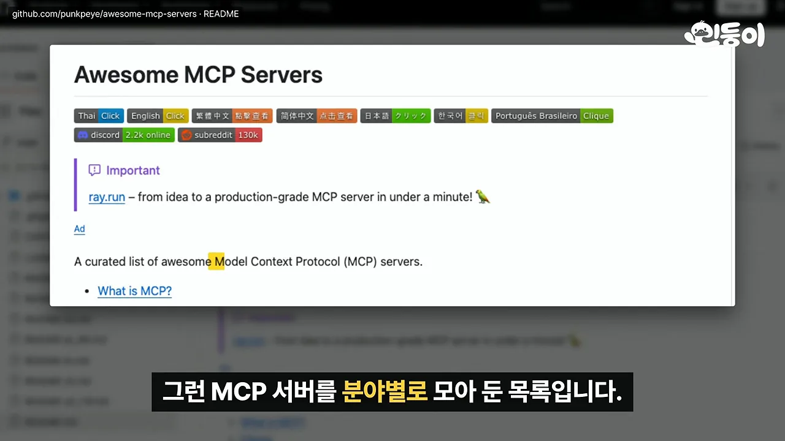
목록이 워낙 길어서 README 파일 하나에 서버 링크가 5,000줄 가까이 들어 있다고 해요. 영상 속 파일 정보에는 5,458줄로 찍혀 있어요. 브라우저 자동화, 클라우드, 코딩 에이전트처럼 분야가 나뉘어 있어요.
서버마다 아이콘이 붙어 있어서 고르기 쉬워요. 아래 범례가 그 아이콘 뜻이에요. 맨 위가 공식 구현(official implementation), 가운데가 Python, TypeScript, Go 같은 개발 언어, 맨 아래 scope가 클라우드 서비스인지 내 컴퓨터에서 돌리는 로컬 서비스(Local Service)인지예요.
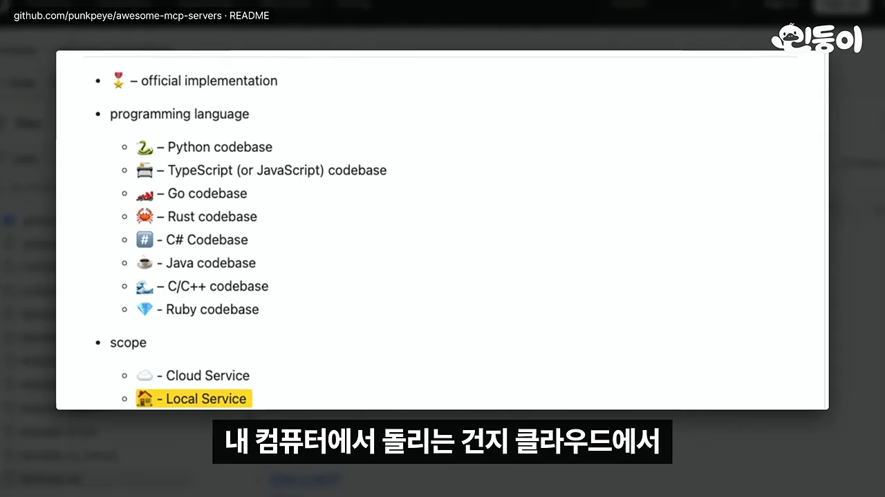
한국어판 README도 따로 있어서 영어가 부담스러우면 그쪽으로 봐도 돼요.